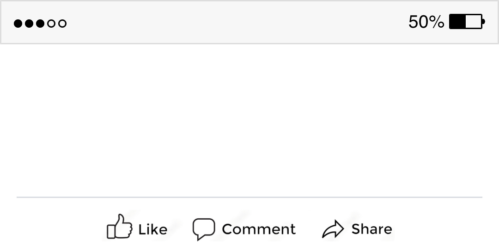

<!DOCTYPE html>
<html>
  <head>
    <title>Human/AI CHAI</title>

    <!-- Load main jsPsych plug-in to initialize jsPsych -->
    <script src="js/jspsych.js"></script>

    <!-- Load jsPsych plug-ins for Human/AI CHAI task -->
    <script src="js/plugin-html-button-response.js"></script> 
    <script src="js/plugin-html-slider-response.js"></script>
    <script src="js/plugin-preload.js"></script>
    <script src="js/plugin-instructions.js"></script>
    <script src="js/plugin-fullscreen.js"></script>
    <script src="js/plugin-browser-check.js"></script>


   <!-- Load stimuli for Human/AI task -->
   <script src="stimuli/AI_task_stim_comments.js"></script>
   <script src="stimuli/AI_task_stim_nocomments.js"></script>


    <!-- Load default jsPsych CSS styles -->
    <link href="js/jspsych.css" rel="stylesheet" type="text/css" />
  

  <style>
  /****** These are all CSS rules that will customize the aesthetics of the task *******/

/* Make the background color 'white' */
body {
  background-color: white;
       } 

/* Font size, line spacing, and font color */
  .jspsych-display-element {
     font-size: 30px;
     line-height: 1.8em;
     color: black;
  }
  
  /* Split the screen in half */
  .split {
    height: 100%;
    width: 50%;
    position: fixed;
    z-index: 1;
    top: 0;
    overflow-x: hidden;
    padding-top: 20px;
  }
  
  /* Control the left side of the screen */
  .left {
    left: 0;
    background-color: white;
  }
  
  /* Control the right side */
  .right {
    right: 0;
    background-color: white;
  }


/* Customize the 'Next' button for slider-response plugin*/
#jspsych-html-slider-response-next { 
    position: fixed;
    left: 48%;
    bottom: 5%;
} 

#jspsych-html-slider-response-wrapper{
    position: fixed;
    left: 28.5%;
    bottom: 13%;
}
  </style>
  
  </head>
  <body></body>
  <script>


//------------------------------------//
// Initialize jsPsych
//------------------------------------//
var jsPsych = initJsPsych({
    on_finish: function() {
        jsPsych.data.displayData()
    }
})

//------------------------------------//
// Initialize Timeline
//------------------------------------//
var timeline = [];


//--------------------------------------------------------//
// Preload Facebook image file for sharing portion of task
//--------------------------------------------------------//
var images = ['images/facebook_covered.png'];

var preload = {
    data: {
        trial_id: "preload"
    },
    type: jsPsychPreload,
    images: images,
}

timeline.push(preload);


//------------------------------------//
// Collect browser information
//------------------------------------//
timeline.push ({
    data: {
        trial_id: "Browser_check"
    },
    type: jsPsychBrowserCheck
  });


//------------------------------------//
// Make experiment Full Screen
//------------------------------------//
timeline.push({
    data: {
        trial_id: "Full_screen"
    },
    type: jsPsychFullscreen,
    fullscreen_mode: true
});


    
//------------------------------------//
// Define randomization function
//------------------------------------//
/* Define randomization funciton using Durstenfeld shuffle algorithm */
function shuffle(array) {
    let currentIndex = array.length,  randomIndex;
  
    // While there remain elements to shuffle.
    while (currentIndex != 0) {
  
      // Pick a remaining element.
      randomIndex = Math.floor(Math.random() * currentIndex);
      currentIndex--;
  
      // And swap it with the current element.
      [array[currentIndex], array[randomIndex]] = [
        array[randomIndex], array[currentIndex]];
    }
  
    return array;
  }


//------------------------------------//
// Shuffle human/AI stim
//------------------------------------//
var AI_task_stim_comments = shuffle(AI_task_stim_comments)
var AI_task_stim_nocomments = shuffle(AI_task_stim_nocomments)


//------------------------------------//
// Human/AI Task instructions
//------------------------------------//
var AI_instructions = {
  data: {
      trial_id: "AI_instructions"
  },
  type: jsPsychInstructions,
  pages: [
    "<p><div style ='font-size:40px;'>This experiment will involve a few short tasks.</div></p>" +
    "<p><div style ='font-size:40px;'>As part of the first task, you will read short passages and make judgments about them.</div></p>" + 
    "<p><div style ='font-size:40px;'>Click <b>next</b> to begin.</div></p>"
  ],
  show_clickable_nav: true
}

/*push AI instructions to timeline*/
timeline.push(AI_instructions)


//------------------------------------//
// Human/AI Task -- For Loop 
//------------------------------------//
for (var i=0; i < AI_task_stim_comments.length; i++){

/*randomize order of the comments so that human comments and AI comments alternate between showing on the left and right*/
comment_order = jsPsych.randomization.shuffle([AI_task_stim_comments[i].Human_Comment_comments, AI_task_stim_comments[i].AI_Comment_comments])

  /* Human/AI news clip judgment trial */
  var news_clip_question = {
      data: {
          trial_id: "news_clip_question",
          news_clip_stim: AI_task_stim_comments[i].Clip_comments,
          news_clip_type: AI_task_stim_comments[i].Clip_type_comments,
          news_clip_wordcount: AI_task_stim_comments[i].Clip_WC_comments,
          news_clip_prompt: AI_task_stim_comments[i].Clip_Prompt_comments,
          news_clip_category: AI_task_stim_comments[i].Clip_category_comments,
      },
  type: jsPsychHtmlButtonResponse,
  stimulus: `<p></p>` +
  `<p><div class = "split left" style ='font-size: 1.6vw; font-family: Arial; text-align: left; position: fixed; left: 21%; width: 55%; height: 29%; top: 15%; line-height: 1.2em; border: .1vw transaprent; padding: 1vh;'>${AI_task_stim_comments[i].Clip_comments}</div></p>`,
  choices: ["<p style ='font-size:2vw; position: fixed; left: 27.5vw; bottom: 21.5vh;'><b>Human</b></p>", "<p style ='font-size: 2vw; position: fixed; right: 30.5vw; bottom: 21.5vh;'><b>AI</b></p>"],
  prompt: "<p style ='font-size: 2.7vw; position:fixed; bottom: 6vh; left: 21vw;'><b>Was this news clip written by a human or AI?</b></p>",
  button_html: ['<button class="jspsych-btn" style = "width: 15vw; height: 8vh; position:fixed; left:24vw; bottom: 24vh" >%choice%</button>', '<button class="jspsych-btn" style = "width: 15vw; height: 8vh; position:fixed; right:24vw; bottom: 24vh" >%choice%</button>'],
  on_finish: function (data) {
    if (data.response == 0) {
      data.news_clip_response_category = "Human"
    } else {
      data.news_clip_response_category = "AI"
    }
    if (data.response == 1) {
      data.news_clip_response_category = "AI"
    } else {
      data.news_clip_response_category = "Human"
    }
    }
  }


  
  /* Human/AI social media comment comment judgment trial */
  var comments_question = {
      data: {
          trial_id: "comments_question",
          human_comment: AI_task_stim_comments[i].Human_Comment_comments,
          human_comment_wordcount: AI_task_stim_comments[i].Human_WC_comments,
          ai_comment: AI_task_stim_comments[i].AI_Comment_comments,
          ai_comment_wordcount: AI_task_stim_comments[i].AI_WC_comments,
          ai_comment_prompt: AI_task_stim_comments[i].AI_Comment_prompt_comments,
          left_comment: comment_order[0],
          right_comment: comment_order[1],
      },
      type: jsPsychHtmlButtonResponse,
      stimulus: `<p><div class = "split left" style ='font-size: 1.9vw; font-family: Arial; text-align: left; position: fixed; left: 7%; width: 35%; height: 42%; top: 10%; line-height: 1.2em; border: .5vw solid black; padding: 2vh;'>${comment_order[0]}</div></p>` +
          `<p><div class = "split right" style ='font-size: 1.9vw; font-family: Arial; text-align: left; position: fixed; right: 7%; width: 35%; height: 42%; top: 10%; line-height: 1.2em; border: .5vw solid black; padding: 2vh;'>${comment_order[1]}</div></p>`,
      choices: ["<p style ='font-size:1.2vw;'>This comment</p>", "<p style ='font-size: 1.2vw;'>This comment</p>"],
      prompt: "<p style ='font-size: 3vw; position:fixed; bottom: 4vh; left: 9vw;'><b>Which social media comment was written by a human?</b></p>",
      button_html: ['<button class="jspsych-btn" style = "width: 20vw; height: 8vh; position:fixed; left:16vw; bottom: 30vh" >%choice%</button>', '<button class="jspsych-btn" style = "width: 20vw; height: 8vh; position:fixed; right:16vw; bottom: 30vh" >%choice%</button>'],
      on_finish: function (data) {
    if (data.left_comment == data.human_comment && data.response == 0) {
      data.comments_response_category = "Human"
    }
    if (data.left_comment == data.ai_comment && data.response == 0) {
      data.comments_response_category = "AI"
    }
    if (data.right_comment == data.human_comment && data.response == 1) {
      data.comments_response_category = "Human"
    }
    if (data.right_comment == data.ai_comment && data.response == 1) {
      data.comments_response_category = "AI"
    }
  }
      };


  /* Human/AI sharing trial */
   var share_question = {
      data: {
           trial_id: "share_question",
           share_news_clip_stim: AI_task_stim_comments[i].Clip_comments,
           share_news_clip_type: AI_task_stim_comments[i].Clip_type_comments,
           share_news_clip_wordcount: AI_task_stim_comments[i].Clip_WC_comments,
           share_news_clip_prompt: AI_task_stim_comments[i].Clip_Prompt_comments,
           share_news_clip_category: AI_task_stim_comments[i].Clip_category_comments,
       },
  type: jsPsychHtmlSliderResponse,
  stimulus: `<p></p>` +
  `<p><div class = "split left" style ='font-size: 1.6vw; font-family: Arial; text-align: left; position: fixed; left: 21%; width: 55%; height: 29%; top: 15%; line-height: 1.2em; border: .1vw transaprent; padding: 1vh;'>${AI_task_stim_comments[i].Clip_comments}</div></p>` +
  `<p><div style = "font-size: 2.7vw; position: fixed; left: 11%; bottom: 13%;"><b>How likely are you to share this news clip on social media?</b></div></p>`,    
  require_movement: true,
  labels: ['Would not share', 'Neutral', 'Would share'],
  slider_width: 700,
  };

      /* Human/AI news clip judgment trial without social media comment trial afterwards */
    var news_clip_question_nocomments = {
    data: {
        trial_id: "news_clip_question_nocomments",
        news_clip_stim: AI_task_stim_nocomments[i].Clip_nocomments,
        news_clip_type: AI_task_stim_nocomments[i].Clip_type_nocomments,
        news_clip_wordcount: AI_task_stim_nocomments[i].Clip_WC_nocomments,
        news_clip_prompt: AI_task_stim_nocomments[i].Clip_Prompt_nocomments,
        news_clip_category: AI_task_stim_nocomments[i].Clip_category_nocomments,
    },
  type: jsPsychHtmlButtonResponse,
  stimulus: `<p></p>` +
  `<p><div class = "split left" style ='font-size: 1.6vw; font-family: Arial; text-align: left; position: fixed; left: 21%; width: 55%; height: 29%; top: 15%; line-height: 1.2em; border: .1vw transaprent; padding: 1vh;'>${AI_task_stim_nocomments[i].Clip_nocomments}</div></p>`,
  choices: ["<p style ='font-size:2vw; position: fixed; left: 27.5vw; bottom: 21.5vh;'><b>Human</b></p>", "<p style ='font-size: 2vw; position: fixed; right: 30.5vw; bottom: 21.5vh;'><b>AI</b></p>"],
  prompt: "<p style ='font-size: 2.7vw; position:fixed; bottom: 6vh; left: 21vw;'><b>Was this news clip written by a human or AI?</b></p>",
  button_html: ['<button class="jspsych-btn" style = "width: 15vw; height: 8vh; position:fixed; left:24vw; bottom: 24vh" >%choice%</button>', '<button class="jspsych-btn" style = "width: 15vw; height: 8vh; position:fixed; right:24vw; bottom: 24vh" >%choice%</button>'],
  on_finish: function (data) {
    if (data.response == 0) {
      data.news_clip_response_category = "Human"
    } else {
      data.news_clip_response_category = "AI"
    }
    if (data.response == 1) {
      data.news_clip_response_category = "AI"
    } else {
      data.news_clip_response_category = "Human"
    }
    }
     };


  /* Human/AI sharing trial for news clips without comments */
   var share_question_nocomments = {
    data: {
          trial_id: "share_question_nocomments",
          share_news_clip_stim: AI_task_stim_nocomments[i].Clip_nocomments,
          share_news_clip_type: AI_task_stim_nocomments[i].Clip_type_nocomments,
          share_news_clip_wordcount: AI_task_stim_nocomments[i].Clip_WC_nocomments,
          share_news_clip_prompt: AI_task_stim_nocomments[i].Clip_Prompt_nocomments,
          share_news_clip_category: AI_task_stim_nocomments[i].Clip_category_nocomments,
      },
  type: jsPsychHtmlSliderResponse,
  stimulus: `<p></p>` +
  `<p><div class = "split left" style ='font-size: 1.6vw; font-family: Arial; text-align: left; position: fixed; left: 21%; width: 55%; height: 29%; top: 15%; line-height: 1.2em; border: .1vw transaprent; padding: 1vh;'>${AI_task_stim_nocomments[i].Clip_nocomments}</div></p>` +
  `<p><div style = "font-size: 2.7vw; position: fixed; left: 11%; bottom: 13%;"><b>How likely are you to share this news clip on social media?</b></div></p>`,    
  require_movement: true,
  labels: ['Would not share', 'Neutral', 'Would share'],
  slider_width: 700,
  };

  /* Push each trial to experimental timeline */
  timeline.push(news_clip_question);
  timeline.push(comments_question);
  timeline.push(share_question);
  timeline.push(news_clip_question_nocomments);
  timeline.push(share_question_nocomments);

  };
    


//------------------------------------//
// Survey is complete
//------------------------------------//
var survey_complete = {
    data: {
        trial_id: "survey_complete"
    },
    type: jsPsychInstructions,
    pages: function(){
    pageOne = "<p><div style ='font-size:40px;'>The experiment is complete!</div></p>" +
        "<p><div style ='font-size:40px;'>Press <b>Next</b> to finish the experiment.</div></p>"
    return [pageOne]
    },
    button_label_next: "Next",
    show_clickable_nav: true
    }

/*push survey_complete to timeline*/
timeline.push(survey_complete)


// Execute timeline.
jsPsych.run(timeline);

  </script>
</html>